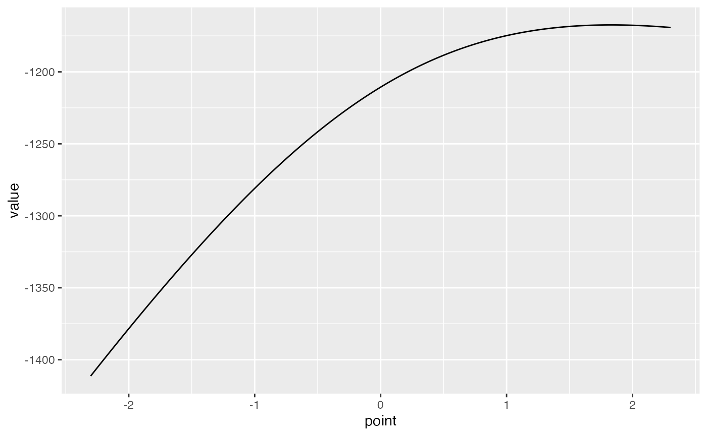

Empirical calibration and MaxSPRT
Martijn J. Schuemie
2024-09-30
Source:vignettes/EmpiricalMaxSprtCalibrationVignette.Rmd
EmpiricalMaxSprtCalibrationVignette.RmdIntroduction
When new drugs or vaccines are brought to market, it is important to continue to monitor their safety. The phase 2 and 3 trials preceding marketing may uncover most common adverse events, but rare adverse events may go undetected due to limited sample size of the trials. Other adverse events may go undetected if they only affect a subpopulation that was excluded from the clinical trials. To catch these types of adverse events requires post-marketing drug and vaccine safety surveillance, for example using routinely collected healthcare data, such as administrative claims and electronic health records. To detect adverse events as quickly as possible, data should be analyzed as it accrues, for example once every month analyzing all data up to that point in time. It is important to realize that such sequential testing for a safety signal is a form of multiple testing that needs to be adjusted for if one aims to maintain the prespecified type 1 error (i.e. if one aims to keep the probability of rejecting the null when the null is true at the specified alpha level). A common approach to adjusting for sequential testing is maximum sequential probability ratio testing (MaxSPRT), used by the U.S Food and Drug Administration (FDA) in its safety surveillance.
However, there is another important reason why the true type 1 error might deviate from the prespecified alpha, and that is systematic error due to the observational nature of the study. Systematic error can manifest from multiple sources, including confounding, selection bias, and measurement error. For example, in a study comparing vaccinated to unvaccinated, the vaccinated group may differ from the unvaccinated one in terms of age and fragility that impact the baseline probability of having the outcome, and failing to adjust for these differences will lead to biased effect size estimates.
This vignette demonstrates combining adjusting for sequential testing through MaxSPRT with adjusting for systematic error using empirical calibration. We use a simulated dataset of survival data for several negative controls and a single positive control.
Simulated data
For this vignette we will use simulated data that can be generated
using the simulateMaxSprtData function
maxSprtSimulationData <- simulateMaxSprtData(
n = 10000,
pExposure = 0.5,
backgroundHazard = 0.001,
tar = 10,
nullMu = 0.2,
nullSigma = 0.2,
maxT = 100,
looks = 10,
numberOfNegativeControls = 50,
numberOfPositiveControls = 1,
positiveControlEffectSize = 4
)
head(maxSprtSimulationData)## time outcome exposure lookTime outcomeId
## 6 5.4443501 0 TRUE 10 1
## 18 5.7940466 0 TRUE 10 1
## 35 7.5386315 0 TRUE 10 1
## 51 5.4168833 0 TRUE 10 1
## 62 0.5159339 0 FALSE 10 1
## 74 9.9375227 0 FALSE 10 1This is simulated survival data for 50 negative controls (outcome IDs 1-50), and 1 positive control (outcome ID 51). The data provides 10 looks at data accruing over time (at times t = 10, 20, 30, …, 100), with each look having more data than the one before. We simulated moderate systematic error (mean = 0.2, SD = 0,2), and the positive control has a true hazard ratio of 4.
MaxSPRT
MaxSPRT (Maximum Sequential Probability Ratio Testing) is a well-known procedure for adjusting for sequential testing. It requires computing the log likelihood ratio (LLR), and comparing it against a prespecified critical value to determine whether there is a signal (suggesting an effect).
Log likelihood ratio
In this case, because we have survival data we will use a Cox
proportional hazards model. For any outcome, at any look, we can fit a
Cox model using the Cyclops package. In this example, we
use outcome 51, and the look at t = 50:
library(Cyclops)
library(survival)
dataOutcome51 <- maxSprtSimulationData[maxSprtSimulationData$outcomeId == 51, ]
dataOutcome51LookT50 <- dataOutcome51[dataOutcome51$lookTime == 50, ]
cyclopsData <- createCyclopsData(
Surv(time, outcome) ~ exposure ,
modelType = "cox",
data = dataOutcome51LookT50
)## 'as(<numLike>, "dgeMatrix")' is deprecated.
## Use 'as(as(as(., "dMatrix"), "generalMatrix"), "unpackedMatrix")' instead.
## See help("Deprecated") and help("Matrix-deprecated").
fit <- fitCyclopsModel(cyclopsData)
coef(fit)## exposureTRUE
## 1.829709For MaxSPRT, we’re not interested in the point estimate of the hazard
ratio, but rather the LLR. This is the log of the ratio between the
maximum likelihood, and the likelihood of the null hypothesis. The
maximum likelihood is already available from the fit
object:
# Maximum log likelihood:
fit$log_likelihood## [1] -1167.396We can use Cyclops to compute the log likelihood of parameter value 0 (hazard ratio = 1):
llNull <- getCyclopsProfileLogLikelihood(
object = fit,
parm = "exposureTRUE",
x = 0
)$value
llNull## [1] -1210.618And we can compute the LLR by subtracting the two. Note that we use a single-sided test, so we will set LLR to 0 if the point estimate (the maximum likelihood estimate) is below 0. It might also be the case that no maximum likelihood estimate exists, for example because there are zero counts, in which case we also set the LLR to 0:
if (fit$return_flag == "ILLCONDITIONED" || coef(fit) < 0) {
llr <- 0
} else {
llr <- fit$log_likelihood - llNull
}
llr## [1] 43.22212Critical value
The critical value for the LLR is computed based on the total number of looks that are expected to be made, and the expected sample size at each look. Because we have already simulated all looks, we will use the actual sample sizes instead of expected ones. For Cox models it is recommended to use the binomial critical value computation:
outcomesPerLook <- aggregate(outcome ~ lookTime, dataOutcome51, sum)
# Need incremental outcomes per look:
outcomesPerLook <- outcomesPerLook$outcome[order(outcomesPerLook$lookTime)]
outcomesPerLook[2:10] <- outcomesPerLook[2:10] - outcomesPerLook[1:9]
exposedTime <- sum(dataOutcome51$time[dataOutcome51$exposure == TRUE &
dataOutcome51$lookTime == 100])
unexposedTime <- sum(dataOutcome51$time[dataOutcome51$exposure == FALSE &
dataOutcome51$lookTime == 100])
cv <- computeCvBinomial(
groupSizes = outcomesPerLook,
z = unexposedTime / exposedTime,
minimumEvents = 1,
alpha = 0.05
)## Selected alpha: 0.046 (least conservative value below 0.05)
cv## [1] 2.689342
## attr(,"alpha")
## [1] 0.04597By comparing the LLR to the critical value we can determine whether there is a signal:
llr > cv## [1] TRUEMaxSPRT and empirical calibration
Likelihood profiles
For empirical calibration, we’ll need more than just the likelihood at the maximum and at the null hypothesis. Instead, we’ll need information on the entire likelihood distribution. A convenient way to approximate the likelihood function is the likelihood profile. This profile provides, at various values the hazard ratio, the computed likelihood. The `Cyclops package has a convenient function for computing likelihood profiles:
llProfileOutcome51LookT50 <- getCyclopsProfileLogLikelihood(
object = fit,
parm = "exposureTRUE",
bounds = log(c(0.1, 10))
)
head(llProfileOutcome51LookT50)## # A tibble: 6 × 2
## point value
## <dbl> <dbl>
## 1 -2.30 -1411.
## 2 -2.29 -1410.
## 3 -2.29 -1410.
## 4 -2.28 -1409.
## 5 -2.27 -1408.
## 6 -2.26 -1407.Here we’ve specified that the true hazard ratio is almost certainly in the [0.1, 10] range, so the profile will be restricted to this region. This function uses an adaptive grid, using more grid points if the likelihood shows higher curvature to avoid loss of information. If we want, we could also plot the profile:

Note that the x-axis is the log of the hazard ratio, and the y-axis represents the log of the likelihood.
Fitting a null distribution using likelihood profiles
We can fit our null distribution as usual, using the point estimates and standard errors of the negative controls as described in the other vignettes, but when counts are low this may lead to biased estimates of the null distribution parameters. Especially for the earlier looks, we can expect counts to be low, and therefore it is better to take the full likelihood distribution of each negative control into account. Again the likelihood profiles are a convenient way of capturing the full likelihood function. Here we compute the likelihood profile for all negative controls (having outcome IDs 1-50) at time t = 50:
negativeControlProfilesLookT50 <- list()
dataLookT50 <- maxSprtSimulationData[maxSprtSimulationData$lookTime == 50, ]
for (i in 1:50) {
dataOutcomeIlookT50 <- dataLookT50[dataLookT50$outcomeId == i, ]
cyclopsData <- createCyclopsData(
Surv(time, outcome) ~ exposure ,
modelType = "cox",
data = dataOutcomeIlookT50
)
fit <- fitCyclopsModel(cyclopsData)
llProfile <- getCyclopsProfileLogLikelihood(
object = fit,
parm = "exposureTRUE",
bounds = log(c(0.1, 10))
)
negativeControlProfilesLookT50[[i]] <- llProfile
}We can use these profiles to fit the null distribution:
nullLookT50 <- fitNullNonNormalLl(negativeControlProfilesLookT50)## Detected data following grid distribution
nullLookT50## Estimated null distribution
##
## Estimate
## Mean 0.3145
## SD 0.1860This shows substantial systematic error in the negative controls, with mean and standard deviation away from 0.
Computing a calibrated critical value
Using the fitted null distribution, we can compute an empirically calibrated CV:
calibratedCv <- computeCvBinomial(
groupSizes = outcomesPerLook,
z = unexposedTime / exposedTime,
minimumEvents = 1,
alpha = 0.05,
nullMean = nullLookT50[1],
nullSd = nullLookT50[2]
)## Selected alpha: 0.050 (least conservative value below 0.05)
calibratedCv## [1] 16.71318
## attr(,"alpha")
## [1] 0.049571Which is substantially higher than the uncalibrated CV we computed earlier (CV = 2.6893419). We can compare the LLR computed earlier to the calibrated critical value to determine whether there is a signal:
llr > calibratedCv## [1] TRUEDemonstrating type 1 error with and without calibration
It is always a good idea to compute the type 1 error based on the negative controls, to understand the operating characteristics of your study. Unfortunately, when doing sequential testing we cannot evaluate the overall performance of our surveillance until our final look at the data. Here we compute type 1 error both with and without calibration, comparing it to the nominal type 1 error, to demonstrate why empirical calibration can be important.
Computing log likelihood ratios and (uncalibrated and calibrated) critical values
We re-use the example code provided earlier to compute the log likelihood ratios, uncalibrated critical values and calibrated critical values for each negative control at each look. Note that this code will take some time to complete.
allCvsAndLlrs <- data.frame()
for (t in unique(maxSprtSimulationData$lookTime)) {
# Compute likelihood profiles and LLR for all negative controls:
negativeControlProfilesLookTt <- list()
llrsLookTt <- c()
dataLookTt <- maxSprtSimulationData[maxSprtSimulationData$lookTime == t, ]
for (i in 1:50) {
dataOutcomeIlookTt <- dataLookTt[dataLookTt$outcomeId == i, ]
cyclopsData <- createCyclopsData(Surv(time, outcome) ~ exposure,
modelType = "cox",
data = dataOutcomeIlookTt
)
fit <- fitCyclopsModel(cyclopsData)
# likelihood profile:
llProfile <- getCyclopsProfileLogLikelihood(
object = fit,
parm = "exposureTRUE",
bounds = log(c(0.1, 10))
)
negativeControlProfilesLookTt[[i]] <- llProfile
# LLR:
llNull <- getCyclopsProfileLogLikelihood(
object = fit,
parm = "exposureTRUE",
x = 0
)$value
if (fit$return_flag == "ILLCONDITIONED" || coef(fit) < 0) {
llr <- 0
} else {
llr <- fit$log_likelihood - llNull
}
llrsLookTt[i] <- llr
}
# Fit null distribution:
nullLookTt <- fitNullNonNormalLl(negativeControlProfilesLookTt)
# Compute calibrated and uncalibrated CV for all negative controls:
cvs <- c()
calibratedCvsLookT <- c()
for (i in 1:50) {
dataOutcomeI <- maxSprtSimulationData[maxSprtSimulationData$outcomeId == i, ]
outcomesPerLook <- aggregate(outcome ~ lookTime, dataOutcomeI, sum)
# Need incremental outcomes per look:
outcomesPerLook <- outcomesPerLook$outcome[order(outcomesPerLook$lookTime)]
outcomesPerLook[2:10] <- outcomesPerLook[2:10] - outcomesPerLook[1:9]
exposedTime <- sum(dataOutcomeI$time[dataOutcomeI$exposure == TRUE &
dataOutcomeI$lookTime == 100])
unexposedTime <- sum(dataOutcomeI$time[dataOutcomeI$exposure == FALSE &
dataOutcomeI$lookTime == 100])
# Note: uncalibrated CV will be same for every t, but computing in loop
# over t for clarity of code:
cv <- computeCvBinomial(
groupSizes = outcomesPerLook,
z = unexposedTime / exposedTime,
minimumEvents = 1,
alpha = 0.05
)
cvs[i] <- cv
calibratedCv <- computeCvBinomial(
groupSizes = outcomesPerLook,
z = unexposedTime / exposedTime,
minimumEvents = 1,
alpha = 0.05,
nullMean = nullLookTt[1],
nullSd = nullLookTt[2]
)
calibratedCvsLookT[i] <- calibratedCv
}
# Store in a data frame:
allCvsAndLlrs <- rbind(
allCvsAndLlrs,
data.frame(
t = t,
outcomeId = 1:50,
llr = llrsLookTt,
cv = cvs,
calibrateCv = calibratedCvsLookT
)
)
}Computing overall type 1 error
We compare the computed LLRs to the computed critical values to determine how often a signal is generated for the negative controls (where the null hypothesis is true):
signals <- c()
calibratedSignals <- c()
for (i in 1:50) {
idx <- allCvsAndLlrs$outcomeId == i
signals[i] <- any(allCvsAndLlrs$llr[idx] > allCvsAndLlrs$cv[idx])
calibratedSignals[i] <- any(allCvsAndLlrs$llr[idx] > allCvsAndLlrs$calibrateCv[idx])
}
# Type 1 error when not calibrated (should be 0.05):
mean(signals)## [1] 0.34
# Type 2 error when calibrated (should be 0.05):
mean(calibratedSignals)## [1] 0.04This shows that type 1 error is much closer to nominal when using empirical calibration.